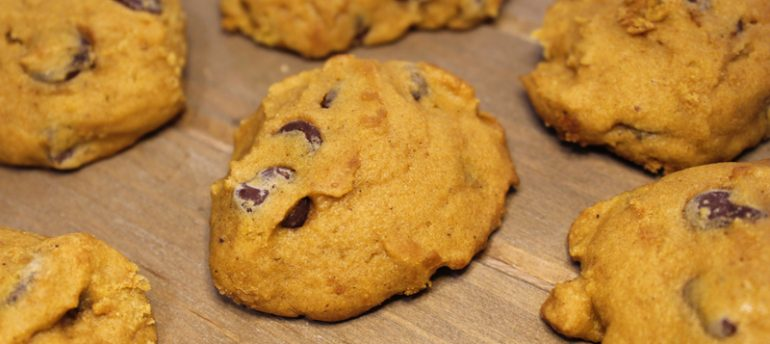

Pumpkin Chocolate Chip Cookies

Description
One year my brother came to the family gathering with a box of cookies
and this recipe to share. Our family devoured them. Now I share them
with you, hopefully you enjoy them as much as we do.
Ingredients List
- 1 cup canned pumpkin
- 1 cup white sugar
- ½ cup vegetable oil
- 1 large egg
- 1 teaspoon baking soda
- 1 teaspoon milk
- 2 cups all-purpose flour
- 2 teaspoons baking powder
- 2 teaspoons ground cinnamon
- ½ teaspoon salt
- 2 cups semisweet chocolate chips
- ½ cup chopped walnuts (Optional)
- 1 tablespoon vanilla extract
Directions
- Preheat the oven to 350 degrees F (175 degrees C). Grease a baking sheet.
- Combine pumpkin, sugar, oil, and egg in a large bowl. Dissolve baking soda into milk in a small bowl and stir in.
- Stir together flour, baking powder, cinnamon, and salt in a separate bowl. Add flour mixture to pumpkin mixture and mix well. Add chocolate chips, walnuts, and vanilla; stir just to combine.
- Drop by spoonful on the prepared cookie sheet and bake in the preheated oven until lightly brown and firm, approximately 10 minutes.
The cookies will not lay flat like your picturesque Pillsbury cookie, they will have some texture.
Nutritional Information
C'mon man, they are cookies for cryin' out loud, can't you just enjoy a good thing?!
Return to Homepage